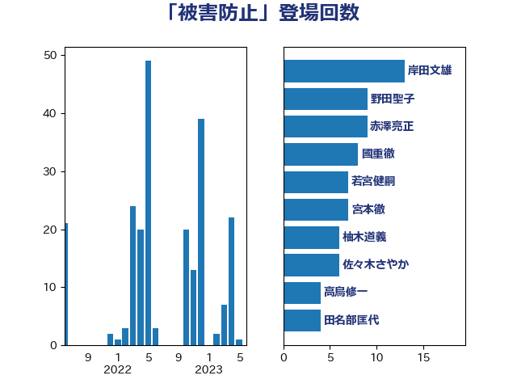

単語「被害防止」

| 井上信治 | 自由民主党 | 14 回 |
| 柚木道義 | 立憲民主党 | 12 回 |
| 赤澤亮正 | 自由民主党 | 9 回 |
| 野田聖子 | 自由民主党 | 9 回 |
| 若宮健嗣 | 自由民主党 | 7 回 |
| 赤羽一嘉 | 公明党 | 6 回 |
| 安江伸夫 | 公明党 | 4 回 |
| 山口壯 | 自由民主党 | 4 回 |
| 岡本三成 | 公明党 | 4 回 |
| 田名部匡代 | 立憲民主党 | 4 回 |
| 青木愛 | 立憲民主党 | 4 回 |
| 高鳥修一 | 自由民主党 | 4 回 |
| 上川陽子 | 自由民主党 | 3 回 |
| 堤かなめ | 立憲民主党 | 3 回 |
| 鈴木英敬 | 自由民主党 | 3 回 |
| 中川康洋 | 公明党 | 2 回 |
| 井上英孝 | 日本維新の会 | 2 回 |
| 國重徹 | 公明党 | 2 回 |
| 宮崎雅夫 | 自由民主党 | 2 回 |
| 小宮山泰子 | 立憲民主党 | 2 回 |
| 山井和則 | 立憲民主党 | 2 回 |
| 岸田文雄 | 自由民主党 | 2 回 |
| 杉久武 | 公明党 | 2 回 |
| 渡辺猛之 | 自由民主党 | 2 回 |
| 高橋千鶴子 | 日本共産党 | 2 回 |
| 鰐淵洋子 | 公明党 | 2 回 |
| あかま二郎 | 自由民主党 | 1 回 |
| 中川宏昌 | 公明党 | 1 回 |
| 中川郁子 | 自由民主党 | 1 回 |
| 中村裕之 | 自由民主党 | 1 回 |
| 伊藤孝江 | 公明党 | 1 回 |
| 伊藤岳 | 日本共産党 | 1 回 |
| 古川元久 | 国民民主党 | 1 回 |
| 吉川赳 | 無所属 | 1 回 |
| 塩村あやか | 立憲民主党 | 1 回 |
| 塩田博昭 | 公明党 | 1 回 |
| 大石あきこ | れいわ新選組 | 1 回 |
| 宮内秀樹 | 自由民主党 | 1 回 |
| 寺田学 | 立憲民主党 | 1 回 |
| 小泉進次郎 | 自由民主党 | 1 回 |
| 山下芳生 | 日本共産党 | 1 回 |
| 岸真紀子 | 立憲民主党 | 1 回 |
| 川田龍平 | 立憲民主党 | 1 回 |
| 松島みどり | 自由民主党 | 1 回 |
| 柴田巧 | 日本維新の会 | 1 回 |
| 森山浩行 | 立憲民主党 | 1 回 |
| 池田佳隆 | 自由民主党 | 1 回 |
| 河西宏一 | 公明党 | 1 回 |
| 漆間譲司 | 日本維新の会 | 1 回 |
| 熊野正士 | 公明党 | 1 回 |
| 田村憲久 | 自由民主党 | 1 回 |
| 田村智子 | 日本共産党 | 1 回 |
| 畦元将吾 | 自由民主党 | 1 回 |
| 篠原孝 | 立憲民主党 | 1 回 |
| 藤井比早之 | 自由民主党 | 1 回 |
| 赤池誠章 | 自由民主党 | 1 回 |
| 足立康史 | 日本維新の会 | 1 回 |
| 足立敏之 | 自由民主党 | 1 回 |
| 近藤和也 | 立憲民主党 | 1 回 |
| 進藤金日子 | 自由民主党 | 1 回 |